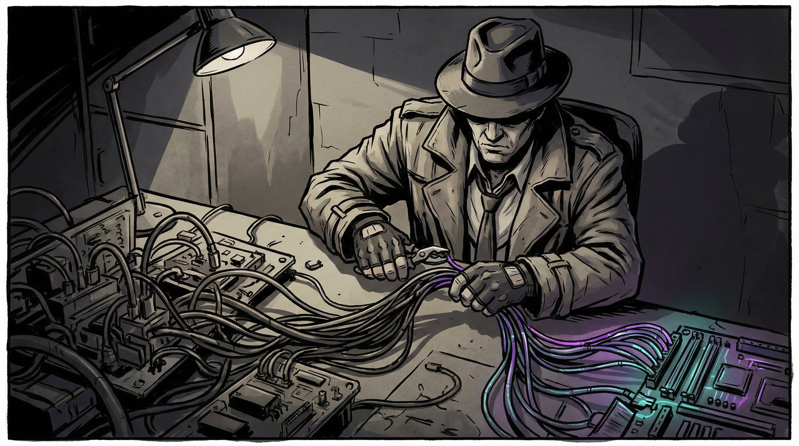

The Last 10% Is 90% of the Work

You know that moment when you think you're done? When the features work, the demo looks good, and you're ready to ship? That's when the real work begins.
This week I dove into FlowBoard's pre-launch polish phase, and it reminded me why the "last 10%" is such a notorious time sink. Not because the bugs are hard to understand—they're often embarrassingly simple—but because they only reveal themselves under real usage patterns that your test harness never imagined.
The Supabase Query Problem
FlowBoard syncs to the cloud via Supabase, and the architecture seemed solid. Every time the user switches projects, we refresh the project list. Every time they save, we refresh again. Comprehensive, right?
Turns out "comprehensive" is another word for "hammering your database." Users were hitting timeout errors, and the culprit was death by a thousand queries. The fix was almost embarrassing:
// Before: paranoid refreshing
async function loadProject(id: string) {
await refreshProjectList(); // why?
const project = await getProject(id);
await refreshProjectList(); // seriously, why?
return project;
}
// After: trust your data
async function loadProject(id: string) {
const project = await getProject(id);
if (!projectInLocalList(project)) {
updateLocalList(project); // only if needed
}
return project;
}This pattern—updating local state instead of re-fetching—cut our Supabase calls by about 60%. Sometimes the best optimization is just... doing less.
The "Untitled Project" Mystery
Here's one that took longer to diagnose than to fix. Users would hard-refresh the page, and their carefully named project would suddenly become "Untitled Project." The kind of bug that makes you question your sanity.
The culprit was a race condition. After a hard refresh, the local project list is empty while we fetch from the cloud. Meanwhile, the auto-save function fires, sees an empty list, and defaults to "Untitled Project." That default then overwrites the real name in the cloud.
The fix: before defaulting, check if the project exists in the cloud first. If it does, use that name. Only default if the project genuinely doesn't exist anywhere.
Rendering During Render
React has this rule: don't cause side effects during render. It's a good rule. I broke it.
The login page had what seemed like a reasonable check: if the user is already authenticated, redirect them to the dashboard. But calling navigate() directly in the component body triggers React's "bad state update" warnings and, worse, occasionally causes blank pages.
// Before: navigating during render
function LoginPage() {
const { user } = useAuth();
if (user) {
navigate('/dashboard'); // don't do this
}
return <LoginForm />;
}
// After: useEffect for side effects
function LoginPage() {
const { user } = useAuth();
useEffect(() => {
if (user) navigate('/dashboard');
}, [user]);
return <LoginForm />;
}I also added an ErrorBoundary wrapper to catch any rendering errors and show a recovery UI instead of a blank page. Belt and suspenders.
The Honesty Update
One small UX fix I'm proud of: the delete confirmation dialog. For cloud users, deleting a project is permanent—there's no undo. But the old dialog said "Remove this project from browser storage?" which implies you could get it back.
Now it says: "Permanently delete this project? This cannot be undone."
Sometimes the most important code change is just... being honest with users about what's going to happen.
What's Next
With these fixes in place, FlowBoard is genuinely ready for its MVP launch. The core features—visual project boards, cloud sync, responsive design—have been solid for a while. But these subtle bugs? They're the difference between "this seems buggy" and "this just works."
Next up: finalizing the pricing model (Indie tier at $8/month, Studio at $19) and setting up the payment infrastructure. The fun administrative stuff.
Sometimes shipping isn't about adding features. It's about making sure the features you have actually work when real humans use them in ways you never expected.